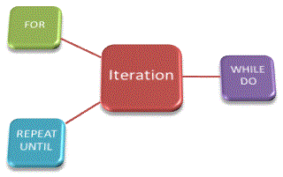

<div id="jsn-maincontent" class="span9 order1 row-fluid">
  <div id="jsn-maincontent_inner">
    <div id="jsn-centercol">
      <div id="jsn-centercol_inner">
        <div id="jsn-mainbody-content" class="jsn-hasmainbody">
          <div id="jsn-mainbody-content-inner1">
            <div id="jsn-mainbody-content-inner2">
              <div id="jsn-mainbody-content-inner3">
                <div id="jsn-mainbody-content-inner4" class="row-fluid">
                  <div id="jsn-mainbody-content-inner" class="span12 order1">
                    <div id="jsn-mainbody">
                      <div id="system-message-container"></div>

                      <div
                        class="item-page"
                        itemscope
                        itemtype="https://schema.org/Article"
                      >
                        <meta itemprop="inLanguage" content="en-GB" />

                        <div itemprop="articleBody">
                          <p></p>
                          <h1 style="text-align: center">
                            Understanding and using iteration
                          </h1>
                          <p>
                            <strong>Introduction</strong><br />Iterative
                            constructs also known as repetitive constructs)
                            repeat the same block of code a number of times
                            using either a FOR loop, a WHILE loop or a REPEAT -
                            UNTIL loop. How many times depends either on the
                            type of construct and possibly whether the result of
                            a test is true or false. These types of constructs
                            result in smaller programs because, for example, if
                            you need to run a block of code 10 times, you only
                            actually have to write it down once (and use an
                            iterative construct).
                          </p>

                          <p style="text-align: center">
                            
                          </p>
                          <p>
                            <strong>The FOR loop</strong><br />If you need to
                            call a block of code a fixed number of times then
                            you should use a FOR loop. Study the following
                            example.
                          </p>
                          <p style="margin-left: 30px">
                            <strong>INPUT MAX</strong><br /><strong>
                              FOR COUNTER = 1 TO MAX DO</strong
                            ><br /><strong> BEGIN</strong><br /><strong
                              >&nbsp; &nbsp; &nbsp;PRINT "This is loop number",
                              MAX</strong
                            ><br /><strong> END</strong><br /><strong>
                              MORE instructions</strong
                            >
                          </p>
                          <p>
                            When the above code is run, a value is entered from
                            the keyboard and assigned to the variable MAX. The
                            FOR loop is entered. The Counter is assigned to 1
                            and the code between BEGIN and END is done. The
                            COUNTER is incremented and the code between BEGIN
                            and END is done again. This continues until MAX is
                            reached. After the MAX loop is done, the program
                            drops out of the loop and MORE instructions in the
                            program sequence are done.
                          </p>
                          <p>
                            <strong
                              >The WHILE (CONDITION) DO ENDWHILE loop</strong
                            ><br />The FOR construction is used if you want to
                            do a block of code a fixed number of times. The
                            WHILE (CONDITION) DO ENDWHILE construction is used
                            if you want to do a block of code a number of times,
                            but you don't know how many! The number of times
                            will be determined by a test before the block of
                            code is executed. If the result of the test is TRUE
                            then the code will be run. If the result is FALSE,
                            then you will drop out of the WHILE loop. Study this
                            example of some code used to allow a user to read
                            some instructions and then press a particular key to
                            continue.
                          </p>
                          <p style="margin-left: 30px">
                            <strong>WRITE "Press C to continue".</strong
                            ><br /><strong> READ KeyPress</strong><br /><strong>
                              WHILE (KeyPress NOT EQUAL TO C) DO</strong
                            ><br /><strong> BEGIN</strong><br /><strong
                              >&nbsp; &nbsp; &nbsp;WRITE "Press C to
                              continue".</strong
                            ><br /><strong
                              >&nbsp; &nbsp; &nbsp;READ KeyPress</strong
                            ><br /><strong> END</strong><br /><strong>
                              ENDWHILE</strong
                            >
                          </p>
                          <p>
                            You should notice that with the WHILE loop, it is
                            possible that the block of code associated with it
                            may never actually get executed! In this example, if
                            C is actually pressed then (KeyPress NOT EQUAL TO C)
                            becomes a FALSE statement. This results in the WHILE
                            loop being skipped completely and the program
                            continues on from after the ENDWHILE instruction.
                            The WHILE block of code doesn't get executed, not
                            even once in this case!
                          </p>
                          <p>
                            <strong>The REPEAT UNTIL (CONDITION) loop</strong
                            ><br />This is very similar to a WHILE loop, except
                            the condition is tested at the end of the code in
                            the loop! This is a tiny difference, but means that
                            the code will always be executed at least once.
                            Compare this to the WHILE loop, where the code might
                            not get executed at all. The code inside a REPEAT
                            loop is done until the condition is TRUE. In other
                            words, if the condition is FALSE, the code repeats.
                          </p>
                          <p>
                            A program using a REPEAT construct will look like
                            this:
                          </p>
                          <p style="margin-left: 30px">
                            <strong>TOTAL=0</strong><br /><strong>
                              REPEAT</strong
                            ><br /><strong> BEGIN</strong><br /><strong
                              >&nbsp; &nbsp; READ VALUE</strong
                            ><br /><strong
                              >&nbsp; &nbsp; TOTAL=TOTAL+VALUE</strong
                            ><br /><strong>&nbsp; &nbsp; END</strong
                            ><br /><strong> UNTIL (TOTAL &gt; 1000)</strong>
                          </p>
                          <p></p>
                        </div>
                      </div>
                    </div>
                  </div>
                </div>
              </div>
            </div>
          </div>
        </div>
      </div>
    </div>
  </div>
</div>
